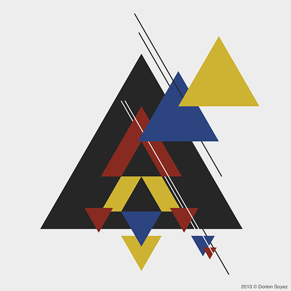
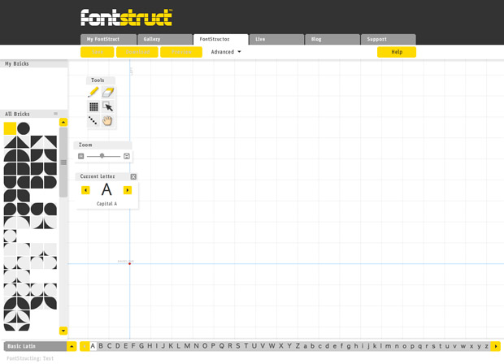

Bauhaus was an influential art and design movement that began in 1919 in Weimar, Germany. The movement encouraged teachers and students to pursue their crafts together in design studios and workshops. The school moved to Dessau in 1925 and then to Berlin in 1932, after which Bauhaus-under constant harassment by the Nazis-finally closed. The Bauhaus movement championed a geometric, abstract style featuring little sentiment or emotion and no historical nods, and its aesthetic continues to influence architects, designers and artists. Bauhaus explored the fundamental rules of Form follows function, where a form should always be applied because of its function instead of its aesthetic appeal. Utility came first, and excessive ornamentations were avoided. Another fundamental rule for Bauhaus was the use minimalist style, only line, shape and colors mattered.
Before the concept of Modernism, graphic design and typography was 'overly decorated' and elaborate, every possible inch of a typical poster would be filled with imagery and type. Designers of the era of Modernism abided to strict, structured grid system with emphasis on negative space, just as important was the use of clean sans-serif type. The idea was to create strong graphics that were against commercialism, greed and cheapness.
Process
The concepts of Bauhaus encouraged me to think about the readability of the typeface and the system it would follow before the appearance. I considered a lot of planning over the type, ensuring each letter was a fluent, bold, easy to read shape to follow the Bauhaus belief form follows function
I used fontstruct to create my typeface and use a 10" X 5" GRID, and then i created a specimen highlighting the uses,functions of the typeface.
The dont i created was created as a display font that could be used for brand names, logo designs and small jewlary design shops.
The Bauhaus School's learning culture encouraged experimentation at a fundamental level. They stand to remind us that rules and conventions are there to be learned, but not always to be observed . Openness in design, whether literal space or the imaginative space left open to the beholder, is something that directly links the Bauhaus to our lives in the 21st century. Form Follows Function can also be seen in Modernist style architecture today.